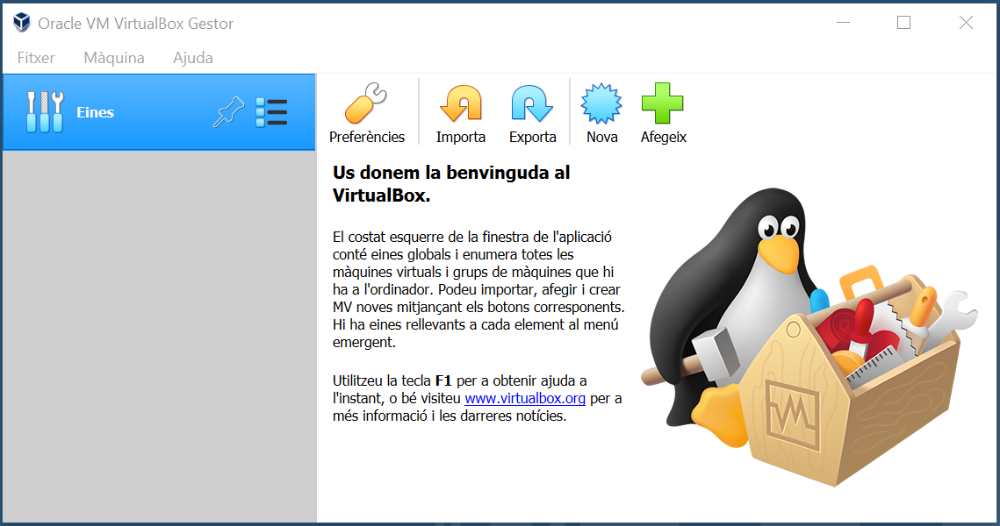

Opció fàcil: màquina virtual preconfigurada
Si et trobes en un del següents casos, aquesta solució pot ser per tu:
Treballes amb MSWindows o MACOS i no pots o no vols instaŀlar-hi una arrancada dual al teu equip.
Disposes d'un equip amb GNU/Linux però t'estimes més que la feina que facis en aquesta assignatura quedi aïllada de la resta.
Per aquestes situacions, una solució fàcil i força acceptable és crear una màquina virtual. En aquest context i simplificant-ho força, màquina virtual es refereix a un sistema operatiu dins el teu sistema operatiu.
Important
Jo ja en sé de fer màquines virtuals!
Si ja tens els dits pelats d'instaŀlar màquines virtuals, pots ometre aquesta pàgina. Simplement assegura't que t'instaŀles un GNU/Linux, per exemple Debian 10 o posterior. Altres distribucions no haurien de suposar-te cap problema pel que fa a aquesta assignatura sempre que sàpigues manegar-te amb la que escullis. Si vas per aquest camí i hi trobes problemes, avisa i potser et sé orientar per que en trobis la solució.
Aquesta secció t'ofereix una guia per crear una màquina virtual a partir d'una de prefabricada. Aquesta opció és la que et permet despreocupar-te al màxim de detalls tècnics ja que, fins i tot, porta instaŀlat la major part del programari que farem servir durant el curs.
Com que ara hi haurà dues màquines a la teva màquina, per aclarir-nos, direm al teu sistema operatiu el host o amfitrió, i al sistema operatiu que hi instaŀlarem a sobre, la màquina virtual.
Potser estàs pensant que t'agradaria muntar tu la màquina virtual pel teu compte i així aprendre a fer-ho. Si és així i disposes d'una mica més de temps, t'he preparat aquesta guia <equip_maquina_virtual> per fer-ho.
Per aquestes instruccions, suposaré que el teu sistema amfitrió és un Windows 10. Altres sistemes haurien de ser molt similars.
Instaŀlació de VirtualBox
En primer lloc, ens cal un programa que gestioni la màquina virtual que farem servir. Tot i que tenim diferents opcions, aquí ens decantarem per una de gratuïta i més que acceptable: VirtualBox.
Si ja el tens instaŀlat o decideixes fer servir una de les alternatives, pots saltar-te aquesta secció.
Per instaŀlar VirtualBox al teu sistema operatiu, pots seguir aquestes passes:
1. Descarregar
Descarrega l'instaŀlador de VirtualBox
Et recomano que ho facis des de la pàgina oficial: https://www.virtualbox.org/wiki/Downloads
A la pàgina hi trobaràs enllaços específics pel teu sistema operatiu

Segueix l'enllaç corresponent. Per exemple, si vols instaŀlar-lo a un MSWidows, selecciona l'enllaç Windows host.
Això et descarregarà un fitxer al teu equip.
2. Instaŀla
Executa el fitxer que t'has descarregat en el pas anterior.
En la majoria dels casos, accepta els valors per defecte a menys que tinguis alguna raó per no fer-ho. Únicament, si t'ofereix la possibilitat d'instaŀlar controladors (en anglès drivers) addicionals, probablement és una bona idea fer-ho per incrementar la usabilitat de l'aplicació.
3. Executa
Arrenca el programa que acabes d'instaŀlar
En MSWindows et trobaràs una pantalla similar a aquesta:
Descarregar la màquina preconfigurada
Aquest és l'enllaç
al fitxer que conté la màquina virtual. És probable que et mostri una
finestreta perquè em demanis accés. Si és així, indica'm al missatge qui
ets. Avisa'm si tens algun problema.
El fitxer fa 3,4Gb i, depenent de la connexió que tinguis, potser et toca esperar una mica.
Un cop finalitzada la descàrrega, recorda on has deixat el fitxer. Per exemple, a la carpeta Baixades
Importar la màquina al VirtualBox
Ves al menú de VirtualBox anomenat Fitxer i d'allà selecciona Importa una aplicació virtual.
Ara troba la ubicació del fitxer que t'has descarregat i selecciona'l
Prem el botó Endavant i revisa les opcions:
Per canviar el valor d'alguna opció fes un doble click a sobre i edita segons la teva preferència.
És important especialment el valor de la RAM. La preinstaŀlació indica 4096Mb perquè estic suposant que la teva màquina anfitriona en té més (potser 8GB) Si l'amfitrió té 4Gb, hauràs de baixar aquesta quantitat, per exemple a 2048Mb o 3072Mb. Em sap greu però t'haig d'avisar que t'anirà lent.
Un cop hagis finalitzat, prem el botó Importa i espera un momentet
Un cop finalitzada la importació, t'apareixerà la teva nova màquina virtual. Ja la pots arrencar tot prement la fletxa verda i començar a usar-la!
La màquina virtual disposa de dos usuaris root i general. Veuràs les contrassenyes indicades a la descripció de la màquina.
Selecciona l'usuari General i escriu la contrasenya corresponent.
Et recomano que canviïs les contrasenyes per quelcom que t'agradi més. Així, de pas, també faràs més segur el teu sistema. Demana ajut per fer-ho.
Aquesta màquina virtual ja porta instaŀlades les guest additions, unes utilitats per fer més còmoda la interacció entre la màquina amfitrió i la virtual. Et proposo que li facis una ullada al final de la secció Instal·lació Guest Additions si et cal ajuda per canviar la pantalla de mida o habilitat el copia-enganxa compartit.
Per finalitzar, recorda sempre tancar la màquina virtual amb Apaga i Surt.